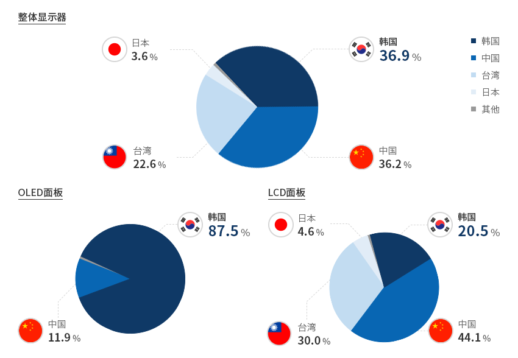
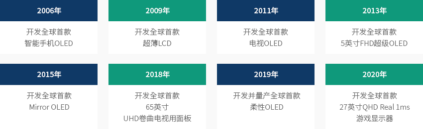
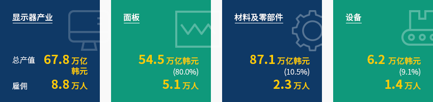
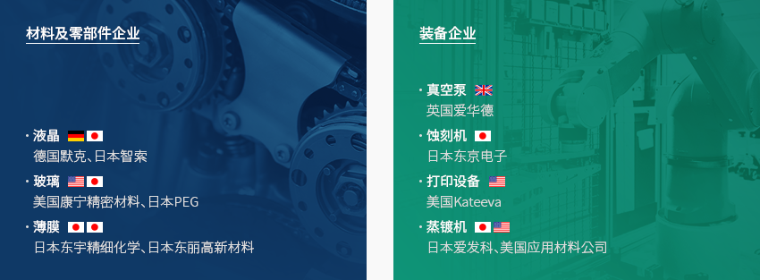
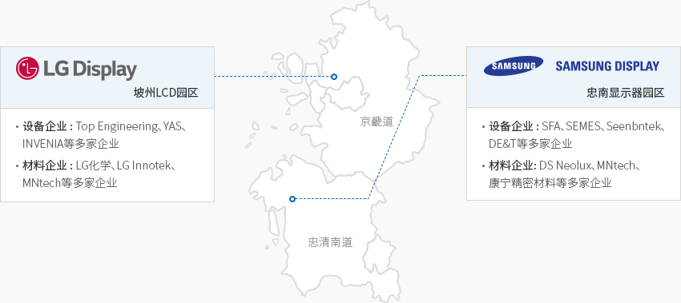

显示器
- Home
- Why KOREA
- 产业
- 显示器
-
韩国显示器 在世界市场上的占有率位居第一 关闭内容韩国显示器 在世界市场上的占有率位居第一2020年，各国显示器市场份额如下：韩国36.9%、中国大陆36.2%、台湾22.6%、日本3.6%，
韩国连续17年稳居全球市占率第一宝座。尤其，在被誉为新一代显示器的OLED市场上，
韩国拥有87.5%的占有率，引领着全球市场。具有高附加值的OLED在折叠式手机、卷轴式电视等创新产品中起到核心作用。
尤其，三星显示在中小型OLED领域位居世界第一，乐金显示则在大型OLED领域蝉联第一名。
韩国企业为了转向附加值更高的OLED而减少LCD产能，并于2018年将全球第一让给了中国。
目前，三星显示（Samsung Display）和乐金显示（LG Display）都在战略缩减LCD产能，以扩大OLED生产。"2020年世界显示器市场占有率（销售额为准）" ※ 资料来源 : OMDIA 2021韩国正在全球显示器市场和技术领域不断研发，引领下一代技术。
※ 资料来源 : OMDIA 2021韩国正在全球显示器市场和技术领域不断研发，引领下一代技术。
2006年开发全球首款智能手机OLED，2011年开发全球首款电视OLED，2019年开发全球首款折叠式OLED韩国在全球范围内率先开发出这些创新技术，
且韩国的OLED生产技术实力领先竞争国家三至五年。"新一代显示器技术领先国家"- 2006年 - 开发全球首款智能手机OLED
- 2009年 - 开发全球首款超薄LCD
- 2011年 - 开发全球首款电视OLED
- 2013年 - 开发全球首款5英寸FHD超级OLED
- 2015年 - 开发全球首款Mirror OLED
- 2018年 - 开发全球首款65英寸UHD卷曲电视用面板
- 2019年 - 开发并量产全球首款柔性OLED
- 2020年 - 开发全球首款27英寸QHD Real 1ms游戏显示器
-
健全康的韩国显示器产业的 材料、零部件、装备生态系统 打开内容健全康的韩国显示器产业的 材料、零部件、装备生态系统韩国显示器产业以面板企业——三星显示、乐金显示为中心，由376家面板生产设备厂商和 681家制造
工艺所需材料及零部件厂商组成。韩国显示器产业总产值为67.8万亿韩元，其中面板的产值为54.5万亿韩元(80%)，
材料及零部件的产值为7.1万亿韩元(10.5%)，设备的产值为6.2万亿韩元(9.1%)。雇佣总数为8.8万人，其中面板、材料及零部件、
设备行业从业人员分别为5.1万人、2.3万人和1.4万人。随着韩国显示器产业从LCD转向OLED，
OLED领域的雇佣人员正在逐步增加。从出口结构来看，大部分出口到显示器模块工厂、电视、
手机等成套企业所在的越南和中国地区，对越出口比重为53%，对华出口比重为38%。"健康的韩国显示器相关材料、零部件、设备生态系统"- 显示器产业 - 总产值 67.8万亿韩元, 雇佣 8.8万人
- 面板 - 54.5万亿韩元(80.0%), 5.1万人
- 面板 - 87.1万亿韩元(10.5%), 2.3万人
- 设备 - 6.2万亿韩元(9.1%), 1.4万人
(单位 : 亿美元, %, $)显示器生产现状 分类, 年度 ※ 资料来源：韩国半导体产业协会、显示器产业协会、信息通信产业振兴院 -
材料领域 外商投资企业的在韩营商案例 打开内容材料领域 外商投资企业的在韩营商案例东宇精细化学以日本的住友化学技术为基础，1991年正式进军韩国，曾为韩国显示器厂
商供应光刻胶和触摸传感器面板等关键材料。目前在平泽、益山、三寄设有三家生产工厂，平泽和益山还建立技术研究所，
正在研发柔性材料等下一代化学材料。2020年销售额达24700亿韩元，从业人员约有2700人。康宁精密材料由三星和康宁于1995年在韩国合资成立，曾向韩国企业供应生产LCD的关键材料——玻璃。
继1996年龟尾营业点生产首款产品之后，2002年天安营业点竣工，规模进一步扩大。
此外，韩国工厂生产的LCD玻璃还对华出口，目前出口额在不断增长。
2020年，销售额达14430亿韩元，从业人员约有2500人。
-
研发及设施投资的 相关抵税制度 打开内容研发及设施投资的 相关抵税制度韩国政府建有扶持制度，如显示器领域研究人才开发费抵税、设施投资税额抵税等。
该制度针对主动矩阵有机发光二极体（AMOLED）、微米发光二极管（Micro LED）、量子点(Quantum Dot)等7项技术和设施，
与之相关的研发和设施投资可享受部分税额抵扣。面板及其相关材料、零部件、
设备均在此列，因而中小企业和中坚企业也广泛受惠于该制度。研发及设施投资相关 抵税制度 分类, 显示器领域新增长原创技术抵税对象技术 分类 显示器领域新增长原创技术抵税对象技术 1 9英寸以上主动矩阵有机发光二极体(AMOLED)面板功能改善及零部件、材料、设备制造技术 2 大气压等离子体蚀刻设备技术 3 柔性显示器面板、零部件、材料、设备制造技术 4 柔性显示器面板、零部件、材料、设备制造技术 5 微型LED显示器面板、零部件、材料、设备制造技术 6 VRㆍARㆍMR显示器面板、零部件、材料、设备制造技术 7 采用环保量子点(Quantum Dot)纳米材料的显示器面板、零部件、材料、设备制造技术 以配额关税保证供需有序韩国政府设有配额关税制度，以增强产业竞争力，保证物资供需有序。
配额关税是一种弹性关税制度，可在基础关税率的基础上限期下调关税，最多可下调40%p，以便稳定价格和保证供需有序。
每6个月或1年调查需求，进而筛选出配额关税适用产品。目前显示器产业也享受配额关税扶持，
涉及面板生产所需的生产设备、材料、零部件。 -
显示器 集群现状 打开内容显示器 集群现状从1995年到2004年，韩国显示器生产基地大多以器兴、天安、龟尾为中心，但在扩大生产线的过程中，
其中心逐渐转移到忠清南道（三星）和坡州（LG）。
随着三星显示和乐金显示分别在京畿道坡州和忠清南道汤井新建生产线，
LCD及OLED相关零部件及材料企业也以上述两个地区为中心构建了集群。패널기업除了面板企业外，相关材料、零部件及设备企业也开始聚集到集群。
坡州集群有Top Engineering、INVENIA、LG化学、LG Innotek等企业入驻，忠南集群则有SFA、
DE&T、DS Neolux、康宁精密材料等多家材料、零部件及设备企业入驻。"显示器产业集群"以面板企业为中心形成设备、材料企业的产业据点乐金显示 - 坡州LCD园区- 设备企业 : Top Engineering、YAS、INVENIA等多家企业
- 材料企业 : LG化学、LG Innotek、MNtech等多家企业
三星显示 - 忠南显示器园区- 设备企业 : SEMES、Seenbntek、DE&T等多家企业
- 材料企业 : DS Neolux、MNtech、康宁精密材料等多家企业
坡州显示器集群乐金显示位于坡州显示器集群，主要生产大型电视LCD及OLED面板，不仅有第七、
八代工厂，还在运用OLED生产线和模块工厂等。由于集群临近港口及机场，
周边交通四通八达，可出口90%以上的产品。此外，首尔海关的议政府办事处也设在坡州LCD产业园内，进口通关时间可缩短至30分钟以内，
厂商可大幅简化出口通关流程并节省时间。由于坡州临近首都地区，可吸引来自首都地区大学的高端人才。此外，
还通过与周边大学签订协议或指定特性化高中等方式进行合作，因此地区内人才供给比较顺畅。忠清南道显示器集群忠清南道是以面板龙头三星显示为中心，入驻有诸多材料、零部件及设备企业。作为显示器领域领头地区，
忠清南道的产能约占到韩国显示器产业的50%，占世界显示器产业的25%以上。忠清南道拥有优秀的研发基础实力，
如在地方自治团体的大力支持下建有显示器扶持中心，并自80年代起约有35所大学进驻牙山、汤井地区等。
不仅如此，由于区域内设有KTX高铁站，可快速前往首尔、釜山、光州等多个地区。而且距离平泽进出口港也仅有30公里，有助于节省物流费用。"主要显示器集群的地理条件"主要显示器集群的地理条件 分类, 坡州, 忠清南道 分类 坡州 忠清南道 距离仁川机场 50km 164km 港口 50km (仁川) 30km (平泽、唐津) 首尔 35km 85km 首尔站 60分钟 (公路、铁路) 34分钟 (KTX), 90分钟 (公路) 用水 八堂大坝 大清水坝 邻近城市 一山 天安牙山 ※ 资料协助：韩国显示器产业协会


Invest KOREA
半导体/显示器项目经理
朴東栗
基干产业引进组
T.+82-2-3460-7726
选址信息推荐
产业园区信息
[Chungcheongnam-do Asan City] Asan 2nd Techno Valley General Industrial
Complex
Click [Go to Detailed Information] to go to the relevant information screen of
Smart K-Factory service of Industrial Complex Corporation.
-
Complex nameAsan 2nd Techno Valley General Industrial Complex
-
Initial designation date2010.12.28
-
Designated area(m2)1,200,443
-
ManagementChungcheongnam-do Asan City
-
Nearby RailwayPyeongtaek Station
-
Distance from station(km)13
-
Nearby AirportCheongju International Airport
-
Distance from airport(km)60
-
Industrial water Supply capacity(ton/day)3915(㎥/day)
-
Affiliation local governmentChungcheongnam-do Asan City
-
Population313,871
产业园区信息
[Gyeonggi-do Paju City] Sinchon General Industrial Complex
Click [Go to Detailed Information] to go to the relevant information screen of
Smart K-Factory service of Industrial Complex Corporation.
-
Complex nameSinchon General Industrial Complex
-
Initial designation date2007.10.01
-
Designated area(m2)189,797
-
ManagementGyeonggi-do Paju City
-
Nearby RailwayHaengsin Station
-
Distance from station(km)27
-
Nearby AirportGimpo International Airport
-
Distance from airport(km)30
-
Industrial water Supply capacity(ton/day)233(㎥/day)
-
Affiliation local governmentGyeonggi-do Paju City
-
Population459,158
产业园区信息
[Gyeonggi-do Paju City] Tanhyeon General Industrial Complex
Click [Go to Detailed Information] to go to the relevant information screen of
Smart K-Factory service of Industrial Complex Corporation.
-
Complex nameTanhyeon General Industrial Complex
-
Initial designation date2000.12.19
-
Designated area(m2)122,871
-
ManagementGyeonggi-do Paju City
-
Nearby RailwayMunsan Station
-
Distance from station(km)8
-
Nearby AirportGimpo International Airport
-
Distance from airport(km)37
-
Industrial water Supply capacity(ton/day)-
-
Affiliation local governmentGyeonggi-do Paju City
-
Population459,158
产业园区信息
[Chungcheongnam-do Asan City] Sinchang Agricultural Industrial
Complex
Click [Go to Detailed Information] to go to the relevant information screen of
Smart K-Factory service of Industrial Complex Corporation.
-
Complex nameSinchang Agricultural Industrial Complex
-
Initial designation date1987.08.20
-
Designated area(m2)56,040
-
ManagementChungcheongnam-do Asan City
-
Nearby RailwayShinchang Station
-
Distance from station(km)4
-
Nearby AirportCheongju International Airport
-
Distance from airport(km)59
-
Industrial water Supply capacity(ton/day)-
-
Affiliation local governmentChungcheongnam-do Asan City
-
Population313,871
产业园区信息
[Gyeongsangbok-do Gumi City] Gumi National Industrial Complex (2,3,4,
Expansion Complex)
Click [Go to Detailed Information] to go to the relevant information screen of
Smart K-Factory service of Industrial Complex Corporation.
-
Complex nameGumi National Industrial Complex (2,3,4, Expansion Complex)
-
Initial designation date1977.04.22
-
Designated area(m2)16,651,936
-
ManagementKorea Industrial Complex Corporation
-
Nearby RailwayGumi Station
-
Distance from station(km)11
-
Nearby AirportDaegu International Airport
-
Distance from airport(km)51
-
Industrial water Supply capacity(ton/day)72327[공업용수/생활용수 分类 없음]
-
Affiliation local governmentGyeongsangbok-do Gumi City
-
Population416,551
产业园区信息
[Chungcheongbuk-do Jeungpyeong County] Jeungpyeong 2nd General Industrial
Complex
Click [Go to Detailed Information] to go to the relevant information screen of
Smart K-Factory service of Industrial Complex Corporation.
-
Complex nameJeungpyeong 2nd General Industrial Complex
-
Initial designation date2009.11.20
-
Designated area(m2)702,807
-
ManagementChungcheongbuk-do Jeungpyeong County
-
Nearby RailwayJeungpyeong Station
-
Distance from station(km)6
-
Nearby AirportCheongju International Airport
-
Distance from airport(km)17
-
Industrial water Supply capacity(ton/day)3,348(㎥/day)
-
Affiliation local governmentChungcheongbuk-do Jeungpyeong County
-
Population81,949